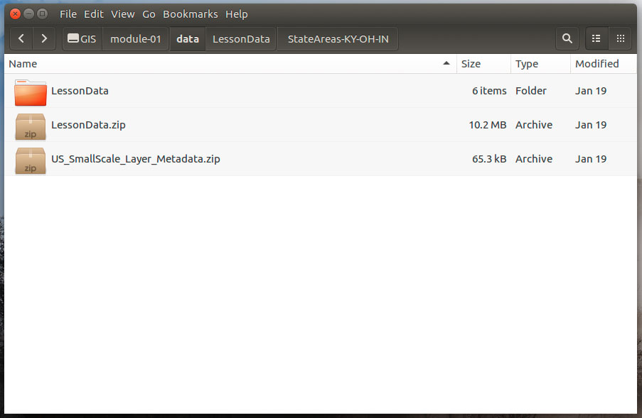
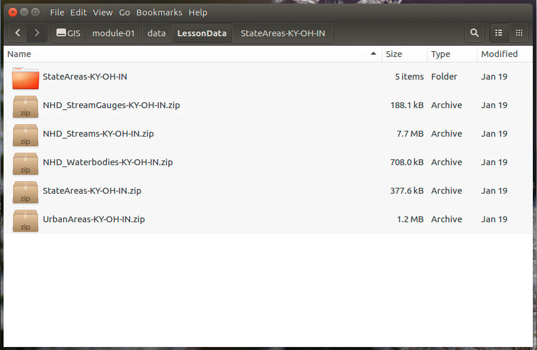
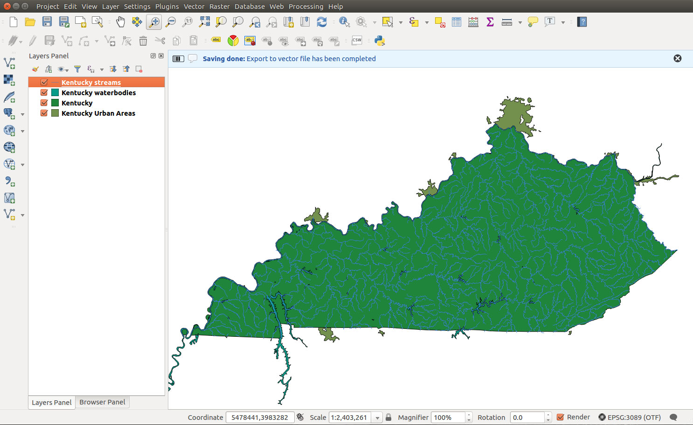

Figure 21. Save vector layer as...
Within this lesson you will:
The following zip files contain spatial data that we'll use in this lesson. It is located on the Canvas course under Module 01 > Lesson 01. Please observe good data hygiene and store your data in a project folder on your computer for this module.
Welcome to the world of mapping, cartography, and GIS! This is the business of making maps. We all know what a map is, right? But really, What's a map? Academic cartographers typically define a map as “an authored, graphic representation of geographic phenomena and events.” This is a loaded sentence, and the question of What is a map is widely open to debate.
Cartography is often defined as the "art and science of map making and map use." While maps have taken many forms over the years, cartography is a more recent endeavor, largely connected to exploration, colonialism, and western academic appropriation of map making.
Mapping. At New Maps Plus, we don't typically defer to the terms "cartography" or "GIS" (though of course we use them). Rather, we use the more general term of "mapping." This usage underscores the insight that, as the provocative writer Denis Wood points out, mapping is a universal human birthright. While academic cartographers (like us) want to lay claim to the "right" way to make a map, and we'll be sharing many of these little rules through these modules, the process for making, sharing, and using maps is bigger than the University.
Case in point are the advancements in mapping, and web mapping technologies in particular, that have in recent decades been furthered by companies like Google, Mapbox, and CARTO. The truth is, they often haven't had trained cartographers or GIS professionals on their staff! Yet they've created incredibly effective and useful tools for creating maps.
Still, there are many important mapping and GIS concepts that come from academic research, and our goal with the New Maps Plus curriculum is to integrate these within the modules in an applied, hands-on manner, with a particular focus on web mapping.
We've been making maps for a long time. And by "we" I don't mean New Maps Plus. I mean humans. Some of the earliest maps may have been drawn on cave walls nearly 19,000 years ago! But we've only been using computers to make them for about half a century. In the 1980s, we started to develop fairly sophisticated software applications for storing, manipulating, and visualizing geographic information. We called these beasts Geographic Information Systems, or GIS for short. GIS also often stands for Geographic Information Science, which involves systematic in-depth study of computational geographic information processing.
At first, GISs were quite slow and clunky, and required you to issue short lines of code into a command line interface. We later improved the interface of GISs to include a Graphical User Interface (GUI), and they've been improving ever since.
The predominate GIS, and the industry standard, is ArcGIS. This product is owned and maintained as proprietary software by the ESRI (Environmental Systems Research Institute) company, headquartered in Redlands, CA. When people talk about GIS, they're often referring to ArcGIS or one of ESRI's other products.
Importantly, ESRI also wrote the specification for one of the more common formats for storing geospatial information: the Shapefile format (see below). While many of ESRI's high-quality products and services come at a cost, they published the specification for the Shapefile format in a white paper (read more about the Shapefile format below). This allows other (open) software applications to read and write Shapefiles, and to convert them to other formats.
GISs are a critical part of map making. For many who work in the industry, manipulating data within a GIS may constitute the majority of their work. For New Maps Plus our web mapping processes, however, operating a GIS is a piece of a larger workflow puzzle. MAP671 therefore seeks to use GIS to 1) ensure we all share a common conceptual and practical understanding geographic information processing, 2) learn some cartography principles and techniques, and 3) are able to take geographic information and prepare it for mapping within a web environment (MAP672 and MAP673).
For years now, GIS professionals and programmers have developed alternative GISs to ArcGIS. The most successful efforts at creating a free and open-source (FOSS) GIS have happened under the guidance of the Open Source Geospatial Foundation, or OSGeo (if you're starting to get the impression that GIS and mapping geeks love acronyms, you're right!). Today, QGIS, which originally stood for Quantum GIS, but is more commonly just called QGIS, is a highly functional software application that rivals ArcGIS while remaining free for download and use. And, it works across both the Mac OS and Windows!
Read 27 Differences Between ArcGIS and QGIS – The Most Epic GIS Software Battle in GIS History.
It should also be noted that QGIS offers some great documentation itself. You should consult the QGIS User guide and the QGIS Training manual and consider these valuable supplements to the information provided within these modules.
QGIS natively supports open source spatial databases like SpatiaLite and [PostGIS]Later in the course when we visit CARTO online mapping, we will use the same SQL on CARTO's database backend, PostgreSQL and PostGIS.
What makes QGIS especially powerful within the mapping community are the wide array of plugins written by various developers. Plugins are small programs that enhance and extend the functionality natively built into QGIS. They are easily installed from within the QGIS application itself. You can peruse the available QGIS plugins. We'll be installing and using many of these plugins.
QGIS functionality is driven by open source libraries, a Geospatial Data Abstraction Library named GDAL. GDAL is actually two libraries: 1) GDAL is used for manipulating raster data and 2) OGR is used for manipulating vector data (see below for the distinction between these two data modules). GDAL and OGR operations are fast and powerful, and they can be used independently of QGIS either via a command line interface or accessed through another coded script, likely written in the programming language of Python.
Python (https://www.python.org/) is a fairly easy-to-learn programming language widely used by mappers within the GIS community. Python also powers much of QGIS (and its plugins), and integrates well with ArcGIS. Additionally, you can write custom scripts in Python to perform repetitive tasks within a GIS (for example, if you need to process 100s of files with the same operations).
You don't need to worry about learning GDAL or Python right now. It's just good for a budding mapper to be aware of them and what they do. Now on to QGIS!
The QGIS software is available as a free download from the QGIS.org site. The current long-term release (LTR) version of the software is version 2.14 nicknamed "Essen" while the latest release is 2.18, "Las Palmas." Both are available for Windows, Mac OS X, Linux, and Android platforms and are compatible with most modern computer setups. Either 2.14 or 2.18 are fine to use in class; you are encouraged to install the latest version, but the official QGIS help documentation is written for the LTR version. A significant difference between the two versions is the menu location of some processing tools.
You may notice that these modules were written using QGIS 2.8 through 2.18, which is due to the frequent release schedule of the QGIS project (three new releases in one year). So, do not be alarmed when your screen doesn't look exactly like the example images provided (we also work primarily within the Mac OS environment, but also Linux and Windows, so the screenshots will look a bit different each week). While it may seem odd to continue with examples in the "older" version, QGIS and open source tools, in general, don't work in quite the same way as other enterprise software products. 2.8 projects will work in QGIS 2.16. In fact, the long term release version in the summer of 2016 was 2.8, and the official documentation was written for this version. Just before the start of this semester, the official documentation was updated to the current LTR 2.14.
For Windows users, the installation process consists of downloading either the 32-bit or 64-bit version of the software and running the installer program (most likely your operating system is 64 bit, but double-check before installing). Go to the download site and download and select your version (https://www.qgis.org/en/site/forusers/download.html). The Mac OS X installation is slightly more complex. QGIS has been packaged for Mac OS by KyngChaos and users should install the packages in the order listed on theKyngChaos QGIS download page. In the past few releases, he has packaged all dependencies in one installer. Make sure you read the "ReadmeFirst" text file the comes with the installer and install in the proper order. If you want to install earlier versions of QGIS on a Mac, follow instructions closely because different versions of QGIS require different supporting libraries.
Figure 01. The King Chaos download page
Another option is to use a virtual machine to run multiple operating systems and experience the full range of open source software. Parallels for Mac OS and Hyper-V on Windows 10 can hosts virtual machines. Popular and free operation systems used in open source mapping include Ubuntu 16.04 and the dedicated mapping platform, OSGeo virtual machine. As a University of Kentucky student, you can download Windows 10 and other useful software.
Bugs exist in all versions of QGIS. While the amazing developers who dedicate their time to building QGIS do all they can to make it a seamless application, you will occasionally find certain functionality that doesn't work quite right (and it may depend on the operating system and its version as well). Prepare for this and avoid becoming frustrated, for running into these kinds of technical obstacles is to be expected. To this end, it's not uncommon to revert to another version of the software to complete a particular task or to use an outdated plugin. In fact, as you'll come to learn, a GIS or mapping workflow often involves tinkering with various tools and technologies to work together. Sometimes it might feel like wizardry, but if you experiment enough you'll discover that getting your idea to become a map is very fulfilling.
Note that Windows users can have multiple versions of QGIS installed simultaneously. Mac users will need to uninstall one version before installing another if we want to switch between them.
After you've installed QGIS, launch the application. It will by default open a new blank project file. The QGIS interface is broken down into 5 major sections:
For an item by item rundown of the QGIS user interface, consult the QGIS User Guide.
QGIS is going to be your primarily tool in MAP671, and you'll want to spend some time outside of of these modules reading the documentation, opening various datasets you encounter, and getting to know the QGIS interface.
Before we explore how Q operates with some content (a.k.a. data), we're going to cover a few important concepts with regard to mapping and GIS.
How do we specify a location on the Earth? The answer to this question turns out to be a surprisingly complex one and involves such mapping/GIS terminology as "geodesy", "projections", "spatial or coordinate reference systems", "datum", "latitude and longitude", and "meridians".
While this module isn't intended to offer an in-depth explanation, we want to gain a working understanding of how space is measured, encoded within our data, and used within QGIS and other mapping processes. For those of you who have worked in GIS for a while, you're already familiar with these concepts. For those of you new to mapping, understand that it is challenging and may take some time to fully understand in both practical and conceptual senses.
To locate geographic features, we use a spatial reference system (SRS), also referred to as a coordinate reference system (CRS). Quoting from the QGIS documentation, a coordinate reference system (CRS) "defines, with the help of coordinates, how the two-dimensional, projected map in your GIS is related to real places on the earth." Spatial references systems also allow us to bring disparate datasets together and line them up atop one another as "layers".
SRSs have a spatial reference ID (SRID), typically a four-digit number that identifies the type of coordinate system a dataset uses. The European Petroleum Survey Group (EPSG) has maintained a catalog of these IDs and often you'll see a coordinate system defined with a "EPSG:" prefix. For example, the CRS used by the GPS navigation system (including your phone) can be defined as "EPSG:4326" which we know as the WGS84 (World Geodetic System, 1984). Other organizations have created projection definitions, e.g., ESRI, and you'll find their prefix with number IDs.
There are two types of these references systems: 1) those which use the center of the Earth as a point of reference for building the system, known as a geographic coordinate system (GCS) (sometimes called a "spherical system"), and 2) those which are used to show the earth on flat surface, known as a projected coordinate system (PCS) (also referred to as a planar, rectangular, or Cartesian coordinate system). All PCSs contain a GCS, because before we can flatten earth, we need to model its sphere-like shape.
Geographic Coordinate Systems, or spherical systems, divide the globe into horizontal lines known as lines of latitude and consider the equator to be 0 degrees from the center point of origin. You can imagine a line going from the center of the earth to the surface, and as that surface point is moved north away from the equator, the angular measure increases until you reach the pole (90 degrees north). Moving that surface point south is considering a negative degree of latitude, until you reach the south pole (-90 degrees, or 90 degrees S).
We also divide the earth into vertical lines known as lines of longitude or meridians, and there are 360 degrees of these starting at an arbitrary meridian that passes through Greenwich, England known as the Prime Meridian. We often count degrees of latitude 180 degrees positive (east) and 180 degrees negative (west) from the Prime Meridian.
Together the lines of latitude and longitude form what's known as the graticule and allow us to designate a coordinate pair specifying a point on the surface of the other. The trick with all this is, however, that the Earth is not a perfect sphere, but rather a lumpy ball. So the measurements of latitude and longitude are not exact.
Geodesy is the scientific study that measures the shape of earth, and different measurements create slightly different models of the Earth's shape. This is why we need to know which model informed a particular geographic coordinate system. We can also perform transformation of all the coordinate pairs within a dataset to another geographic coordinate system (a fairly common task in GIS processing).
We don't view maps as a round sphere, with the exception of a globe. Rather, we need to flatten out the spherical model onto a flat surface (either a printed map or your computer screen). This involves a process known as map projection. Projections take into account the distortions that occur when you flatten a round(ish) object into a flat surface.
When we use a PCS, we cannot avoid distorting earth, e.g., Google maps depiction of Greenland is a gross distortion of the area of the landmass. We select a PCS based on what we want to preserve on the flat map. Generally, we can preserve true area on a map (equal-area projections) or true shape (conformal projections), but not both simultaneously. A vast array of PCSs have been developed to facilitate mapping anywhere on earth; we just need to look up which SRIDs are appropriate for the location we're mapping (more on this later).
For now, let's remember three takeaways about spatial reference and coordinate systems:
One of the preliminary and most expensive parts of the mapping process is that by which we encode information about the mapped environment. This involves abstracting "real" world phenomena into information. Much of what we're going to learn within MAP671's modules, and the rest of the New Maps Plus curriculum, is about how to take good data and make amazing maps and user experiences with those data. But without interesting information with which to create a geo-visualation application or graphic narrative, the story will often fall flat. Great mapping starts with good, clean data.
Mappers have two predominate "models" for encoding the mapped environment into geographic information: a vector model and a raster model. If you've already done GIS you're familiar with these models. If not, this will quickly become important practical knowledge.
The vector data model is composed of points, lines and polygons. Vector data is well suited for representing discrete, homogenous features in the world. For example, a point may represent a bus stop, a line may represent a road, and a polygon may represent a state. Read more about vector data.
How do we encode point, lines, and polygon features within our computer system (and for use over the web)? On a conceptual level, geographic points are encoded as a pair of numerical values (coordinates). Lines are built from points (polylines are a connected sequence of line segments). Polygons are an enclosed set of polylines. These features can have numerous attributes (such as name of a road and area of a state) encoded as an attribute table.
While there are many vector file formats (or specifications), we as web mappers are primarily concerned with three of these: the SQLite/SpatialLite spatial databases, the Shapefile, and the GeoJSON. More on these below.
The raster data model, by contrast, is composed of a array of gridded cells or pixels. The raster model is best used to represent continuous phenomena, such as air temperature or terrain. Read more about raster data.
While you may be familiar with common image formats used in digital photography such as .jpeg, .gif, and .png file formats, there are others better suited to geospatial information that encode metadata and other information within the file (such as spatial reference information). For example, the GeoTIFF, NITF, and JPEG 2000 file formats are commonly used in remote sensing analysis.
While we'll be occasionally using raster imagery, the web mapping world is increasingly moving toward vector data. Even the practice of creating raster tiles with map imagery baked into them (first pioneered by Google in 2006) has given way to vector tiles. Mapbox as well is quickly moving toward vector over raster with their Mapbox GL. However, satellite, drone, and customer imagery are swelling databases with raster data everyday. Check out the near-realtime imagery from MODIS satellite, which can be downloaded and used in QGIS!
We're going to briefly explore three separate sets of geographic data to exemplify both the point/line/polygon composition of the vector data model, as well as to understand the SpatiaLite, Shapefile ,and GeoJSON formats. We'll be exploring how to use raster data in QGIS within a later module.
From the Lesson-01 directory, download the compressed file called LessonData.zip and extract its content. This archive contains vector layers for stream gages, streams, and waterbodies. These three datasets respectively represent points, lines, and polygons. These data show features in Kentucky, Ohio, and Indiana from data downloaded from the National Map Small-Scale Collection. A few other datasets are included to help make a finished map.

Figure 02: Lesson data and metadata

Figure 03: Five zip files are actually five Shapefile layers
First decompress (a.k.a. "unzip") the StateAreas-KY-OH-IN.zip file, which is a bundled collection of files that comprise the Shapefile multi-file format. Shapefiles are actually composed of at least 3 files, but often more, with a common filename prefix.
Three of these are the mandatory files required for by the Shapefile format:
Note that while the .shp and .shx files are not intended to be human-readable, the .dbf file is a more standardized spreadsheet format and can be open and edited using a program such as OpenOffice Calc.
The other files in the directory are optional files:
There are a handful of other files associated with Shapefiles that you might run into from time to time, and typically we just ignore these files.
All the parts of the Shapefile have to be in the same directory for the file to function, so it is vital to keep your data organized. For instance, in this example, it is better to keep these files in their respective directories (e.g., StateAreas-KY-OH-IN/). If you have one Shapefile layer per zipped file, such as found in the LessonData.zip, QGIS can read the zipped file as a layer. No need to decompress and it makes handling your data much easier!
Let's take a look at the .prj file. It is a plain text format that can be opened with any text-editing program. Note that Brackets is a free application for download and use. It is a great tool to have in your toolbox for opening, reading, and writing a variety of text formats and file sizes that other applications struggle with.
Open the .prj file examine the contents:
GEOGCS["GCS_North_American_1983",DATUM["D_North_American_1983",SPHEROID["GRS_1980",6378137,298.257222101]],PRIMEM["Greenwich",0],UNIT["Degree",0.017453292519943295]]
This information specifies the geographic coordinate and reference systems used to create the data, which QGIS will use when rendering the data within the application and performing any subsequence geoprocessing tasks with the data.
In this case, the important thing to note is Geographic Coordinate System is "GCS_North_American_1983" and the datum is "D_North_American_1983." The SRID for this CRS is defined as EPSG: 4269.
Let's now add this Shapefile layer (StateAreas-KY-OH-IN.shp) to QGIS. There are variety of ways to open a Vector file in Q:
QGIS will display the extent of the features contained within the Shapefile. Ok, add the the remaining layers from the LessonData folder. Now we should see three states and with five other layers.
Figure 04. Six layers for Kentucky, Ohio, and Indiana.
This is a very common task using QGIS in a web mapping workflow. Often we're seeking out appropriate data, or we've been supplied with data with which to map. The first step is often to simply open it in QGIS and have a look at it, both in terms of its spatiality and the associated data attributes. Here we see dots; which is not super interesting.
Next right-click on the StateAreas-KY-OH-IN layer and choose Open Attribute Table. This is another very common task you'll be repeating throughout this course. We often do this first to inspect the data attributes associated with the vector features. In this case, we can assume the meaning of various data attributes such as the name of the state, the population in 2010, the state FIPS ID, etc. Of course, explore the provided metadata for each layer to understand what these data attributes mean.
Figure 05. Inspecting the data attributes of a vector layer
While we'll address more robust methods of interrogating your spatial in the next section using DB Manager and SQL, we have an easy and effective way to filter features in QGIS. You can access the Query Builder by right-clicking the layer in the Layers Panel and selecting the Filter.... This presents an dialog where you can execute a Query, a properly structured SQL expression that returns features that meet our selection criteria.
The Query Builder interface will create a properly formatted expression if you just click the fields, values, and operators you need. You can test your query before you execute it, which will return the number of matching rows. You cannot delete any data using this filter function so practice away! To help build your expression, attribute fields values can be accessed with the All option.
Let's look at some examples. If you wanted to filter only Kentucky urban areas from the layer "UrbanAreas-KY-OH-IN", then we would issue the following query:
"state" = 'KY'
Why don't we have all urban areas in Kentucky? After inspecting the attributes, we find that the state field has values for urban areas that span multiple states. We need a query that captures all possibilities:
"state" LIKE '%KY%'
Let's look at the LIKE operator and the % and _ wildcards in the above expression. The LIKE operator does pattern matching and the % wildcard will match anything before or after 'KY'. The _ wildcard matches any single character. Some examples will clarify how this works.
LIKE '_Him_' matches 'sHim', 'SHimd', and 'Him', but not 'him'.
LIKE '%olo%' matches 'Rolo time after dinner', 'how was that rolo', and 'olo' but not 'old'.
We have other options to selecting features. The In operator allows us to select multiple values explicitly:
"state" in ('KY','KY-IN','KY-OH-IN')
This Query Builder uses common operators in the Structured Query Language (SQL) Where clause expression. You can learn more about these operators and experiment with them on the W3Schools SQL tutorial. If you want more exposure to SQL, you can explore the following sections on spatial databases.
Finally, let's filter all of our layers to show only Kentucky features:
Figure 5.18: Four map layers in QGIS Map Canvas
In many modules we present how to do analysis with SQL in spatial databases. These sections are optional and we show to accomplish the same analysis through other methods in QGIS. For example, the following section explores how to filter data. While we can perform the same analysis without SQL, the advantages of learning of how to work in spatial databases are numerous, which we will discuss as we move through the modules.
If you opened the attribute tables for all layers, you should appreciate how much information is provided here. To manage this data, we will create a SpatiaLite database and add these layers. Essentially we are importing many Shapefiles into a single database. What are the advantages of this?
While Shapefiles are widely used and a de facto standard, they are a legacy data format. Let's point out a few problems with the Shapefile.
Our workflow will be to convert the Shapefile to a more useful format. We'll focus on two formats; the spatial database and the GeoJSON format. We'll explore the latter format in more detail in a different section.
A spatial database stores geometry in a table and provides spatial functions to analyze and process that geometry. In the open source world, we have two popular spatial databases, PostGIS and SpatiaLite. Both share the GEOS Library (Geometry Engine, Open Source) to do spatial functions, like calculate areas of polygons and intersecting layers based on spatial proximity. They both use SQL (Structured Query Language) to access these functions and other data management operations, which can be scripted, shared, and reused as plain text files.
While we call these spatial databases PostGIS and SpatiaLite, they are actually extensions to popular open source databases. PostGIS extends PostgreSQL and SpatiaLite extends SQLite. While both databases are free and open source software, full-featured, share the same functions, and are natively supported in QGIS, we have some notable differences.
PostGIS/PostgreSQL is the preferred spatial database, but it is more difficult to install and setup, server-based (requires a service to continuously run on a computer), and not as portable. That said, if you want to work on big data, you will gain a lot of great experience installing and running this spatial database. PostGIS supports raster data type and analysis. Find the installation programs and instructions for your operating system:
SpatiaLite/SQLite is a server-less file-based format that is easily shared and doesn't require any additional software installation. SpatiaLite is not maintained and updated as well as PostGIS, so it is better suited for basic data analysis and storage. We'll discover that after importing our layers in SpatiaLite, we'll have a very clean data hygiene for our GIS projects. SpatiaLite does not support raster data.
We'll mostly use SpatiaLite, because we can share datasets easily, but the SQL statements we execute can be done in both databases. It is easy to import/export datasets between two different databases.
The main tool we'll use to manage our databases is QGIS's DB Manager. Later in the course when we visit CARTO online mapping, we will use the same SQL on CARTO's database. First, we must create and connect our database.
Open QGIS's Browser Panel and right+click the SpatiaLite > Create Database.
Figure 06. Creating new SpatiaLite database
Navigate to your lesson data directory and give the database a meaningful name. Use dashes for spaces.
Figure 07. Name and save new SpatiaLite database
After you create the new database, it will be automatically connected in your Browser Panel. If you have other .sqlite databases, you can connect them here.
Figure 08. Connected new SpatiaLite database
We now have a new database, but in order to use it we need to launch QGIS's DB Manager.
Find the manager in QGIS's menu > Database > DB Manager and click to open. You'll find four types of data that can be connected in DB Manager.
Figure 09. Fresh SpatiaLite database tables
Every new SpatiaLite database has a few tables included by default. Expand your new database and let's inspect what we have. These three tables are system tables and most often we do need mess with them.
Select the Info tab for your database. It provides useful information for your database, like the name and location, SQLite version, and the included libraries supporting the spatial database, i.e. GEOS and PROJ. If you select tables in your database, you can get details like number of rows, fields, and data types of fields. We have no spatial data in our database, so let's add some!
Make sure you have layers in your QGIS's Layers Panel.
Figure 10. Add data to database
Click the Import Layer button and select your streams layer. We'll repeat this for each layer, but we need to aware of settings the import utility presents us.
Figure 11. Pay close attention to these settings!
After you select the layer you want to import, click the Update options which will populate the import parameters with correct default settings. Let's take a look at each parameter.
Click OK and repeat for the remaining layers. After you finished your data import, right+click your database and Re-connect to refresh your tables. If you click Remove you'll remove the connection in QGIS, but not the database. If you accidentally remove your database, just right+click SpatiaLite to Add new connection and navigate to the database you created earlier.
Explore your database and inspect your tables. Notice the unique icons for your different geometry types. The Info, Table, and Preview tabs provide useful information and should be fairly easy to understand.
Figure 12: Inspect your database tables
The Triggers section for tables are commands that are executed when certain processes are committed, like adding new features. These are database system commands and shouldn't be deleted.
What can be deleted? The duplicate Shapefiles! If your database works, the Shapefiles are redundant and can be removed. Also remove them from the QGIS Layers Panel. Keep the metadata, though, since it's still useful.
Before we start executing SQL, let's find example statements we can use during the lesson. If you haven't changed table names, you should be able to copy these statements and paste them into DB Manager. They should run as expected since they are simply instructions. That's a benefit of using SQL.
We offer two versions of SQL statements each week, one for SpatiaLite and the other for PostGIS, via GitHub Gists. Find your flavor of SQL for the first lesson in the following links. This week this really no difference between the two:
Let's say we're going to make a map of Kentucky hydrography and urban areas. How can we prep the data in DB Manager before we add them to the Layer Panel? For example, we need to select just data for Kentucky and use pertinent attributes to style our layers.
We will discover that we can use SQL (Structure Query Language) to perform a lot of useful tasks in DB Manager. While this course is not a class in SQL coding, we will learn by example executing SQL on our databases. Consult this SQL reference and tutorial to experiment with our SQL examples.
Let's launch the SQL window, the second button from the left in DB Manager. It doesn't matter which table you have selected; we can access all tables from the SQL window.
Figure 13: SQL window
This is the default SQL window where we can interrogate our data. Notice that we can Store queries, but they are only saved during this session. They are deleted once we close QGIS. Please use your code editor to save your effective queries.
Figure 14: SQL window to execute queries
A Query is a properly structured SQL Statement that acts on our data. The most basic query is to return all records and columns in a table:
select * from "UrbanAreas-KY-OH-IN"
Use this query in your SQL window and hit Execute.
Figure 15: SQL query to select all records and columns
You should see all records and columns returned in the DB Manager's second window. This is a selection of our data and we could add it to QGIS Map Canvas as a Virtual Layer. Let's explore some more SQL to manage our data before we start mapping.
A few notes about syntax.
/* Comments are good to add */
/* Query to select all records and columns */
select
*
from
'UrbanAreas-KY-OH-IN' --table name (yes, another comment!)
OK, let's explore some queries to inspect and sort our data. You should be able to copy and paste these statements if your table name matches mine. The goal of the SQL statement will be given in a comment line.
/* Sort table by city name, descending */
select
*
from
'UrbanAreas-KY-OH-IN'
order by
"ua_label" DESC
Try swapping DESC with ASC for alphabetically sorting table. ASC is default sort method.
/* Sort table by city name in Kentucky */
select
*
from
'UrbanAreas-KY-OH-IN'
where
"state" = 'KY'
order by
"ua_label"
In most cases, we don't need all columns in our output table. With SQL we can specify which column we want in the output table. This will certainly help keep our data 'slim and trim' for easier management both for cartography and for online sharing.
/* Sort table by city name in Kentucky and return only columns we want to map */
select
/* select columns for output table */
id,
geom,
state,
ua_label as "City_Name",
/* change column names in output table with the "AS" operator */
gis_acres
from
'UrbanAreas-KY-OH-IN'
where
"state" = 'KY'
order by
"ua_label"
SQLite, the database used by SpatiaLite, is very flexible about column data types. If you've work in other databases, you've probably struggled with specifying data types, e.g., should it be float, real, text, etc. Datatypes In SQLite Version 3 are fluid and can be modified easily. Regardless of the data types that came with your layers during import, we have five basic data storage classes:
In PostgreSQL, data types are numerous. The above data types of real, text, and integer are used, but in general we use the following types most:
The reason there are so many types is to maintain performance on massive databases. For example, the real data type has less precision than float or numeric and requires less database storage space. If we don't need to detail, then don't build it into the database.
Our databases will manage our data types pretty well, though sometimes we have small problems in our input data that we need to address. Let's sort by size of urban area as given by the gis_acres field. Switch back to the Info tab for this layer and notice the data type for this field is TEXT. This TEXT field will prevent us from correctly sorting our table. Try out the following SQL add see what happens:
/* Sort table by gis_acres in Kentucky and return only columns we want to map */
select
/* select columns for output table */
id,
geom,
state,
ua_label as "City_Name",
/* change column names in output table with the "AS" operator */
gis_acres
from
'UrbanAreas-KY-OH-IN'
where
"state" = 'KY'
order by
gis_acres
It sorted alphabetically (e.g., 11 comes before 9), not smallest to largest value! Our database has many functions to alter our data during a SELECT. Let's use the CAST function to cast our data to a desired type. SQL functions are formatted in the following way:
function_name(input and parameters)
The CAST requires a field name, and AS operator, and data type.
Execute the following SQL:
/* Sort table by gis_acres in Kentucky and return only columns we want to map */
select
/* select columns for output table */
id,
geom,
state,
ua_label as "City_Name",
/* change column names in output table with the "AS" operator */
cast(gis_acres as real) as "Acres"
/* the cast function changes a field data type */
from
'UrbanAreas-KY-OH-IN'
where
"state" = 'KY'
order by
Acres DESC
/* had to change the order by field name because the cast field name was changed */
/* The largest city in Kentucky is Louisville. Is it in this list? */
We all know Louisville (Kentucky Derby, Fried Chicken, and the Falls of the Ohio!) but does show up in our results? Why not? The WHERE clause selects only records where the column "state" is exactly 'KY'. Of the three largest cities in Kentucky, two sprawl into other states. Louisville is actually in 'KY-IN'. How can we make a WHERE clause that selects records with 'KY' and any other state in the name? Let's look at the LIKE operator and the % and _ wildcards in the following statement:
WHERE "state" LIKE '%KY%'
The LIKE operator does pattern matching and the % wildcard will match anything before or after 'KY'. The _ wildcard matches any single character. Some examples will clarify how this works.
LIKE '_Him_' matches 'sHim', 'SHimd', and 'Him', but not 'him'.
LIKE '%olo%' matches 'Rolo time after dinner', 'how was that rolo', and 'olo' but not 'old'.
OK, one last query before we start adding layers to our map.
/* Sort table by gis_acres for largest urban areas in Kentucky and include those urban areas that span into other states. */
select
/* select columns for output table */
id,
geom,
state,
ua_label as "City_Name",
/* change column names in output table with the "AS" operator */
cast(gis_acres as real) as "Acres"
/* the cast function changes a field data type */
from
'UrbanAreas-KY-OH-IN'
where
"state" like '%KY%'
/* include urban areas that extend into other states */
order by
Acres DESC
/* had to change the order by field name because the cast field name was changed */
/* The largest city in Kentucky is Louisville. Is it in this list? */
Figure 16: Output table from above query
As you can see, we have a lot of functionality with simple text. As we journey through New Maps Plus and online mapping, we use more and more code to produce content. It would be good to start collecting your successful SQL commands. Use a code editor like Brackets to save your queries as .sql text files.
In DB Manager we can save our successful queries to QGIS's Map Canvas in two ways:
id and geom columns. These need to be available for mapping.
Figure 17: Load a new layer into QGIS Map Canvas
Let's make a map of waterways and urban areas for Kentucky. We'll build some SQL statements to extract what only what we need for final cartography. Here are the layers we will query:
/* Select Kentucky state polygon with population and square miles*/
select
/* select columns for output table */
id,
geom,
name,
pop,
sq_miles
from
'StateAreas-KY-OH-IN'
where
"name" = 'Kentucky'
If you have a successful query, Load as a new layer.
/* Select Kentucky waterbodies, which are lakes, swamps, and large rivers*/
select
/* select columns for output table */
id,
geom,
state,
name,
feature,
area_sq_mi
from
'NHD_Waterbodies-KY-OH-IN'
where
"state" like '%KY%'
/* rivers can span two states */
If you have a successful query, Load as a new layer.
/* Select Kentucky streams and attributes for mapping*/
select
/* select columns for output table */
id,
geom,
state,
name,
feature,
length_mi,
strahler as "Stream_Order"
/* Column showing size of stream */
from
'NHD_Streams-KY-OH-IN'
where
"state" like '%KY%'
/* rivers can span two states */
and
"Stream_Order" > -999
/* Use the "AND" operator to get streams in Kentucky and are on the stream network */
order by
"Stream_Order" DESC
If you have a successful query, Load as a new layer. This last query was based on the Metadata provided with this data. In the NHD_Streams.txt we find this definition of the attribute "Strahler":
Attribute:
Attribute_Label: Strahler
Attribute_Definition:
A number representing the order of the stream
using the Strahler stream-order classification system,
in which first-order streams have no tributaries,
second-order streams begin at the confluence of two first
order streams, third-order streams begin at the confluence
of two second-order streams and so on. If a lower-order
stream flows into a higher-order stream, the stream
order of the higher-order stream does not increase.
Attribute_Definition_Source: Dingman, S.L., 2002, Physical Hydrology, 2nd Ed.
Attribute_Domain_Values:
Range_Domain:
Range_Domain_Minimum: 1
Range_Domain_Maximum: 7
Attribute_Domain_Values:
Enumerated_Domain:
Enumerated_Domain_Value: -998
Enumerated_Domain_Value_Definition:
The feature is not part of the stream network and is outside the coastline.
Enumerated_Domain_Value_Definition_Source: National Atlas of the United States
Attribute_Domain_Values:
Enumerated_Domain:
Enumerated_Domain_Value: -999
Enumerated_Domain_Value_Definition:
The feature is not part of the stream network and is inside the coastline.
Enumerated_Domain_Value_Definition_Source: National Atlas of the United States
If you have four layers in QGIS's map canvas like shown below, you can close DB Manager. It's time to make a map!
Figure 18: Four map layers in QGIS Map Canvas
We noted earlier that every spatial layer has a coordinate system. This information is used by a GIS or mapping application to determine how to display the spatial data. Within QGIS, both individual layers and the project as a whole will have a spatial reference setting.
Double-clicking on the Kentucky state polygon layer within the Layers Panel, or right-clicking and choosing Properties, will open up the layer's Layer Properties window.
Figure 19: The coordinate reference system of the layer. NEVER CHANGE IT HERE.
The CRS of this layer is "EPSG: 4269", also called "NAD83", which is a Geographic Coordinate System (GCS) and only defines the shape of the sphere-like earth. It doesn't project the layer to a 2D plane and QGIS has defaulted to a equirectangular projection, where lines of longitude and latitude are equally spaced.
Inspect all layers' CRS and find that they are all the same. This is no surprise, since we added them to database with all the same CRS. QGIS can project all of our layers simultaneously to a better representation of local area. "EPSG: 4269" is useful for storing continental-scale datasets and is one of the official CRS used by the federal and state government agencies. It is an "unprojected" CRS with the idea that the end user will project the data to a CRS appropriate for the area mapped.
Click on the Project menu > Project Properties. This is where the CRS for the entire project is set. Choose the CRS tab (left-hand side). Depending on what your default settings are for QGIS, the project's coordinate reference system may not match with the layer we just imported. Find "EPSG: 3089" CRS, which is the official CRS for Kentucky. Notice the checkbox at the top of the menu box, where is says "Enable 'on the fly' CRS transformation".
Figure 20. Project Properties window enable 'on the fly' transformation
When checked, this feature causes all of your layers to appear to be projected in the project CRS regardless of what they're actually projected in. This can be helpful when loading layers with different spatial reference systems. That's right, you don't necessarily need all your layers and project's spatial reference system to match! However, if you're going to do any spatial analysis (such as using one layer to clip out features from another), the layers have to actually be in the same CRS (and not just appear to be "on the fly"). We'll cover one way to properly and permanently transform CRSs in the next section.
Let's say that now we wish to export spatial layers into a different format more suitable for a web mapping environment; we use the GeoJSON format. GeoJSON is a widely embraced open interchange format for encoding geographic data (points, lines, polygons) and used within such mapping libraries as Mapbox.js, Leaflet, CARTO, Data Driven Documents (D3). GeoJSON is a convenient way to store your spatial data within a single text file and used it within QGIS or a web map.
The GeoJSON has additional advantages over the Shapefile and SpatiaLite formats. The GeoJSON format can store multiple vector geometry types in one file (e.g., point and polygon in the same file. Shapefiles can store only one type of geometry in a file). GeoJSON is readable/editable with a plain text editor, e.g. such as in Brackets. Neither the SQLite nor Shapefile have this option. GeoJSON can have long field names, but Shapefiles have a 10-character limit as noted earlier.
When we convert to a GeoJSON, we can permanently transform the data's spatial reference information from the current GCS_North_American_1983, i.e., NAD83, to one more common in the web mapping environment: WGS84.
To perform the data conversion and spatial reference transformation:
QGIS then performs the format conversion as well as the projection transformation. This method is primary way we both permanently change the CRS of a layer and covert it to a new layer. The other way to perform a CRS transformation is when import (and export) layers to a spatial database.
Figure 21. Save vector layer as...
To briefly introduce the GeoJSON format, examine the file produced by QGIS in your folder/directory structure. The beautiful part of the GeoJSON format, compared to other formats, is that it is a single, plain text file. Go ahead and open it up using Brackets.
While it's not initially a reading-friendly collection of text, careful examination of it's contents reveal a simple standard encoding all the geographic features. We can see, for instance, the file encodes the output spatial reference information we specified in QGIS ("crs": { "type": "name", "properties": { "name": "urn:ogc:def:crs:OGC:1.3:CRS84" } },), as well as the data attribute information encoded as key/value pairs that we saw earlier within the Attribute Table.
Before submitting a GeoJSON, load the file into http://geojson.io. If it looks correct on this site, then you have a properly formatted GeoJSON.
For the remainder of this module, we'll continue to explore the QGIS interface while making a simple map of hydrography in Kentucky. We'll prepare the map for export using the QGIS Print Composer. Continuing from the steps in the previous sections, you should have four layers in the proper CRS as shown here:

Figure 22. Kentucky map in proper coordinate system and ready to style
Save your QGIS project now and save often!
Let's now cover some basics of styling in QGIS.
QGIS adds layers to the Layers Panel in the order in which you import them and renders them in the map canvas starting at the bottom of the Layers. Depending on the order in which you add your data files, this can result in some layers obscuring others. We want our layers arranged so that state outline renders first, then urban areas, streams and finally waterbodies. Drag and sort each layer to achieve this layering order.
Next, let's set the Map Canvas background color. Let's experiment with light on dark color scheme. Go to QGIS menu > Project > Project Properties.... Select the General tab. Change the Background color to 5% black using the Select Color selector.
Figure 23: Select Color picker to modify color
QGIS selects a random color for each layer as you import them. To change a layer's color, right+click on the layer's name in the Layers Panel (just double-click the layer), in this case Kentucky, and select Properties. Select Style tab and Simple fill and make the polygon fill color a little less lighter than the background and the outline a lot lighter, but not 100% white. Let's try to build up colors and make a subtle luminous effect. Experiment with other settings, such as outline width and join style (beveled vs round corners).

Figure 24. QGIS layer preferences window selecting Style tab
Next, let's style the Kentucky Urban Areas layer. We'll remove the polygon outlines with the "No Pen" setting and give the layer some transparency to blend the with the background. Since this is a map about waterways, our urban layer should be "just a whisper." Consult this style setting:

Figure 25. QGIS layer preferences window changing urban areas
The stream layer has attributes that help visualize the network of major waterways, Stream_Order. The numbers indicate rank of streams on a network, the higher the number, the more branches up stream. In the layer's Style tab, select the method of symbology as Categorized with the column providing the categories as Stream_Order. While these are numbers, they only indicate rank and not magnitude. Click each symbol and change its color to #2f7fff (this is hexadecimal color value commonly used in web mapping applications) and make the line width increasingly thicker with higher rank. Let's say from 0.1 mm to 1.5 mm is the range of widths, though, feel free to experiment with these values.
Figure 26. QGIS Style preferences for symbolizing streams by an attribute category
Note that layers' columns from SpatiaLite are all TEXT data types. We'll address this in the next module by creating new columns that are explicitly NUMERIC. If the data was presented as a numeric type, or if we were mapping quantities/magnitudes, we would graduate the thickness of the stream widths, which is automated in QGIS. For now, read more about using colors on thematic maps.
Since we've made a custom style, let's save it to our database. Click on the Style drop-down menu and Save Style > Save in database (spatialite) and call it "Stream style by Order":
Figure 27. Saving Style preferences for layers in a spatialite database
Now, we'll finish our style on the Kentucky waterbodies layer. Open its Style and make the polygon outline the same color as your streams and the polygon fill a little lighter than the outline color, which is a traditional cartographic convention. Applying the color blue to water features is long standing convention and intuitive for most viewers. Many mappers make use of ColorBrewer to help them make good decisions when intuitive choices aren't obvious.
Figure 28. Style the waterbody polygons
Let's evaluate our styles by setting our scale and inspecting our line widths. The line widths we selected are in millimeter units and are the same regardless of the scale of the map. You might have noticed in the Style tab we could make our style units in map units, i.e., feet, but takes more experimentation to make look good. However, if you can use map units effectively it makes finishing a layout faster.
So we know our data is optimized for 1:1,000,000-scale maps. Let's set our scale to that value in QGIS scale menu and then Lock it:
Figure 29. Set Map Canvas scale
Use the Magnifier to zoom to 400%, which is about the maximum resolution a viewer can see on a printed page. It is also the maximum zoom level for high-resolution GeoPDF maps. In this next section we'll set our page size to accommodate a 1:1,000,000 map of Kentucky.
How does your line work look? I think my initial widths were too generous for the higher order streams. Revisit any layers' styles and change to new settings. It's always good to save the style to the database, too.
If you get lost panning and zooming, we have a few ways to recenter our map. The easiest way is to right-click a layer that is the minimum extent of our desired area and Zoom to layer. This will change your Scale so you'll need to reset that value. The Spatial Bookmarks Panel will save desired zoom/pan views as convenient bookmarks that exported and imported in other projects:
Figure: Using spatial bookmarks to set desired views in QGIS Map Canvas
This is enough on styling for now. Let's move on to consider how to get this thematic map out of QGIS.
We'll be using the Print Composer to prepare our map for export or print. Consult the QGIS Print Composer documentation for more details and explanation.
Next, open up the QGIS Print Composer. This is where we'll layout our map and add the necessary map elements, like titles, a legend, scale, etc. To open Print Composer, go to Project in the top menu bar, then New Print Composer. You'll be asked to name this session, call it "Kentucky Streams".

Figure 30. QGIS main window opening new Print Composer
Print Composer offers a lot of options for laying out your map, we'll go through a few of the basic features.
Let's now bring our map in by clicking the Add new map icon on the far left (or go to Layout > Add Map). The cursor will turn into crosshairs. Click and drag the cursor to draw a box. Starting at the top left corner of the white workspace, drag a box in which to place the map. You can change the size of the box once it's been created by dragging the sides.
Visit the Composition tab and change the Page Size and Page Background color.
Figure 31. Setting map composition properties
Next, select he Item properties tab and change verify the scale is 1:1,000,000 and change it if not. You might also need to Update preview. Use the Move item content tool to center your map in tis frame. A lot of options are available here to make a nice cartographic output, such as Grids and Overviews.

Figure 32: Setting map item properties
Once you've got it centered and scaled to your liking, check the box next to Lock layers for map item from within the Item Properties panel.
Now we'll add some basic map elements. To add a title, select the Add new label button. Drop and drag a new text box to add a title to your map. Give your map a meaningful title. Good map titles typically explain the what, where, when of the geography being depicted (you may have to consult the metadata for this information). For instance, in this case we'll write a title "Major waterways of Kentucky."
Using the Item Properties options on the right side of the screen, you can change the content of the text box as well as alter the font. You'll want to choose a large font size for the text, for example,
Figure 33. A formatted title added to the map
Now use the Add new label to include such additional information as descriptions of the data, author name and date, and metadata information. Look in a layer's metadata for citation information. Start with:
"Map prepared by Boyd Shearer for the Department of Geography January, 2016 Software used: QGIS 2.18.3 on Ubuntu 16.04 Data acquired from..."
Next add a legend by clicking on the Add new legend icon and clicking and dragging in the space where you want the legend. In the Item Properties menu, unclick Auto Update under Legend Items and scroll down enough to see the menu bar below the list of legend items. To remove items from the legend we don't need, click on the item and then the negative icon. Adjust the background and font color to match your theme.
Figure 34. Adjusting the legend
Let's add a scale bar. The default units will be meters, but we can select "Feet" in the scale bar Item properties. Again, change the font and color to match your theme:
Figure 35. Adjusting the scale bar
There are a number of other map elements that can be added through the Print Composer interface including directional arrows, rendered HTML from other websites, and additional graphics. Play around with the settings and see what you can create. Again, consult the QGIS documentation site.
QGIS gives us a couple of options for exporting the map. Go to Composer in the top menu bar. In the dropdown menu you'll see that you have the option to Export as Image (from which you have a variety of image formats to choose from), Export as PDF, and Export as SVG. Try exporting several maps and examine the file produced.
If we enable the Save world file in our Map Composition > Export Settings, we can export raster data that is georeferenced and useable in a GIS app. So, you can make finished maps to print or new layers to use in another GIS project.
Figure 36. Example export from QGIS Print Composer
Note that you may find the Composer limited for producing the quality of the static map you're looking for. You can easily open the PDF document in an application such as Adobe's Illustrator and Photoshop, or the open-source Inkscape vector drawing program for further refinement.
Finally, don't forget to Save your work. If you've done the minimum, your final GIS project space should have the following files: .qgs, .sqlite, .geojson, an export from Print Composer and a folder of metadata files. That's it: slim, trim, nice, and clean!